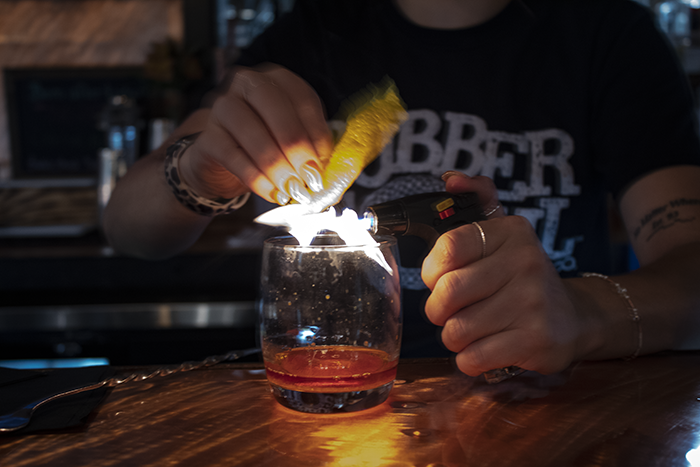

Step 2 - Orange Peel
- Peel orange while barely touching the outter side of the peel.
- Torch peel on both sides, hold peel horizontally, pinch the top and bottom together and light torch in front of the orange oil that is being realeased while pinching.
